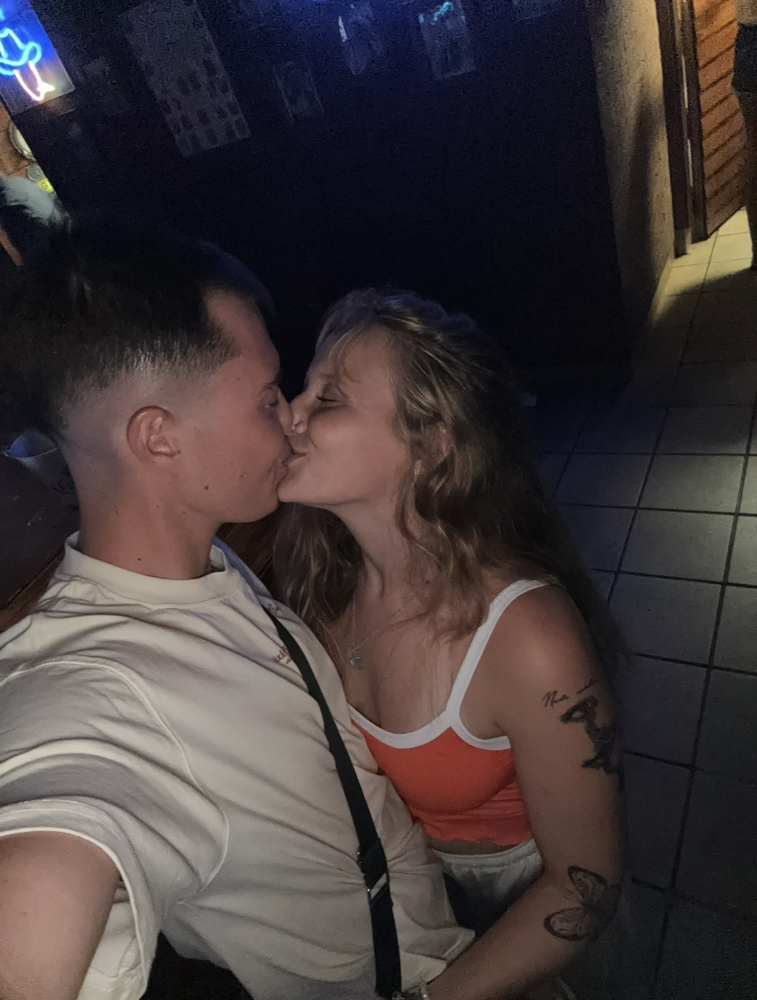
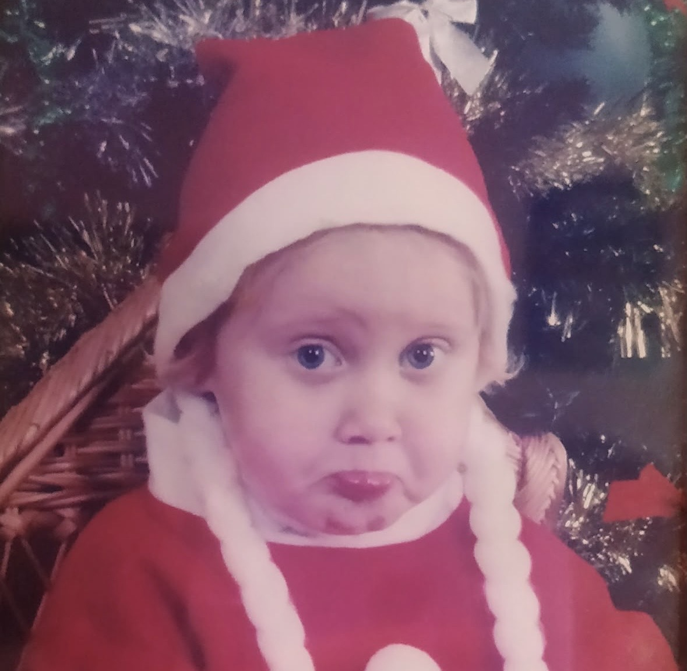

Todo empezó el 28 de junio de 2026.
Desde ese día no hemos dejado de hablar ni un solo instante.
Había algo diferente. Una conexión que no se puede explicar con palabras.
Parecía que nos conocíamos de antes. Como si el tiempo solo hubiera estado esperando el momento exacto para juntarnos.
Nunca había sentido algo así con nadie.
Fuenlabrada y Alfaz del Pi.
Kilómetros de distancia que, de alguna forma, nunca importaron.
Cada mensaje, cada llamada, cada plan… todo se sentía cercano.
Y cuando por fin te vi, lo confirmé todo.
Estabas exactamente donde debías estar.

Hay miradas que se quedan para siempre.
Hace años coincidimos sin conocernos.
Estábamos en el mismo lugar, respirando el mismo aire, sin saber que el destino ya estaba escribiendo nuestra historia.
Ahora todo tiene sentido.
Cada camino, cada decisión, cada espera… nos trajo hasta aquí.

Hay personas que llegan a tu vida y lo cambian todo.
Tú lo cambiaste todo.
Yoli...
Hay una única pregunta que quiero hacerte.
¿Quieres ser mi novia?
Este contador no mide el tiempo que llevamos juntos.
Mide el comienzo de todos los recuerdos que nos quedan por vivir.
Yoli,
El 28 de junio de 2026 empezamos a hablar. Desde ese día no hemos pasado ni un solo día sin escribirnos, sin escucharnos, sin sentirnos cerca aunque hubiera kilómetros de por medio.
Sobre el papel parecía lejos. En la realidad, nunca lo fue.Todo se sintió natural, como si llevara años esperando ese momento.
Hace tiempo coincidimos sin conocernos. Estábamos en el mismo lugar, sin saber que el destino ya estaba tejiendo algo. Ahora, mirando hacia atrás, todo encaja. Cada decisión, cada camino, cada espera… nos trajo hasta aquí.
Nunca había sentido una conexión tan clara con alguien. Hablar contigo es fácil. Estar contigo es fácil. Imaginar un futuro contigo también lo es.
Quiero construir ese futuro. Quiero los recuerdos que todavía no existen. Quiero los días ordinarios y los extraordinarios. Quiero seguir eligiendo esto, cada día.
Gracias por existir. Gracias por haber llegado.
Con todo lo que siento,
tu persona.